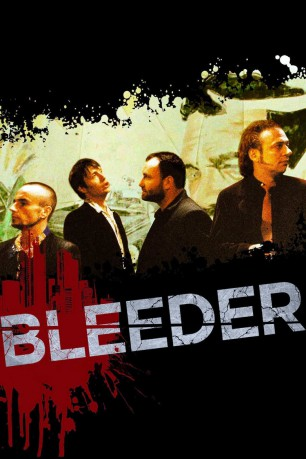

#10141 Bleeder
 
 IMDB-Wertung: 6.8 / 10
IMDB-Wertung: 6.8 / 10  Metascore: 0
Metascore: 0 
Die Welt von Leo gerät aus den Fugen, als seine Lebensgefährtin ihm offenbart, daß sie wieder einmal schwanger ist, dieses Mal das Kind aber zur Welt bringen will. Der Mann, dessen Leben bisher von Horrorfilmen mit seinen Freunden bestimmt war, gerät nun außer Kontrolle, und er versucht verzweifelt zu retten, was noch zu retten ist.
Jahr: 1999
Dauer: 93 Minuten
FSK: 16
Land: Dänemark Studio: Galileo Medien AGTonspuren:
Untertitel:
Auflösung: 1080p (1920x824) Größe: 8007 MB
Genre: Drama, Krimi
Regisseur: Nicolas Winding Refn
Drehbuch: Nicolas Winding Refn
Soundtrack: Peter Peter
Darsteller:
 Kim Bodnia als Leo
Kim Bodnia als Leo Mads Mikkelsen als Lenny
Mads Mikkelsen als Lenny Rikke Louise Andersson als Louise
Rikke Louise Andersson als Louise- Liv Corfixen als Lea
- Levino Jensen als Louis
 Zlatko Buric als Kitjo
Zlatko Buric als Kitjo Claus Flygare als Joe
Claus Flygare als Joe- Ole Abildgaard als Videobutik Kunde
- Gordana Radosavljevic als Mika
- Marko Zecewic als Marko
- Dusan Zecewic als Dusan
- John Barimani als Kioskejer
- Ramadan Huseini als Ven i Kiosk
- Karsten Schrøder als Røde
- Sven Erik Eskeland Larsen als Svend
- Troels Richter Knudsen als Troels
- Søren Vestergaard als Søren
- Ivan Jovanicic als Ivan
- Daniel Mortensen als Danny
- Sebastian Sandbeck als Seb
- Perry Christensen als Ussel Mand
- Leif Nørreballe als Antikvariatsekspedient
- Charlotte Fuchs als Pige i Grillbar
Datei: X:\1999\Bleeder (1999, FSK16, 1920x824).mkv seit 11.12.2018
Festplatte: HD 1996-2002
 Es gibt insgesamt 81 Filme in der Gruppe '1999'
Es gibt insgesamt 81 Filme in der Gruppe '1999'